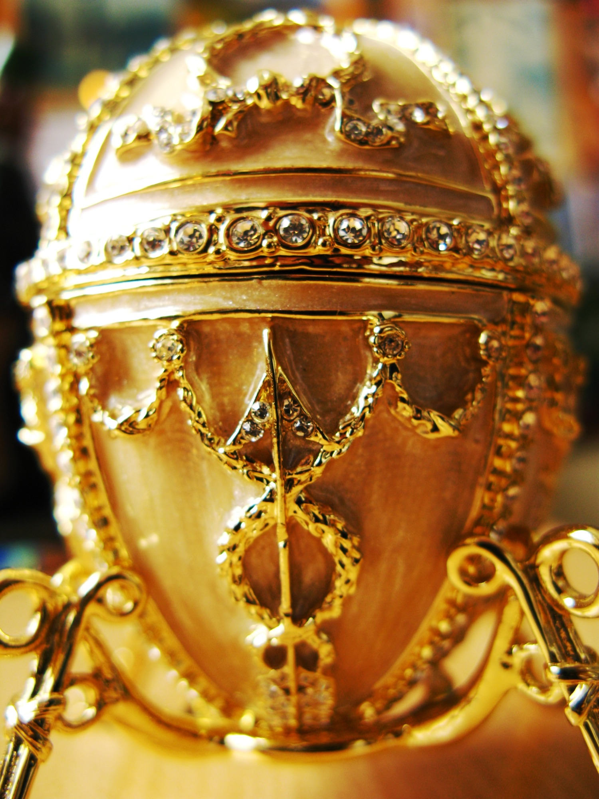
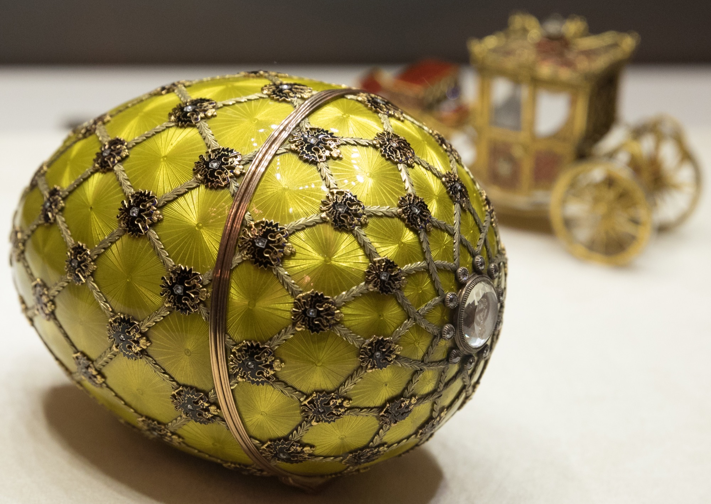
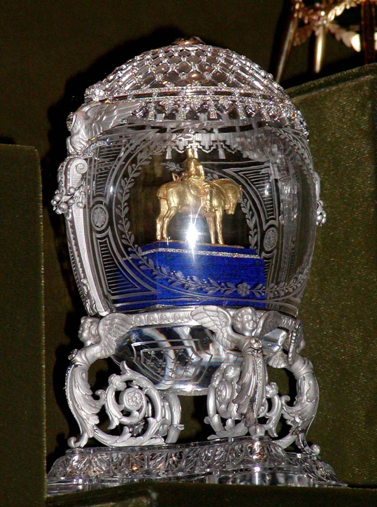
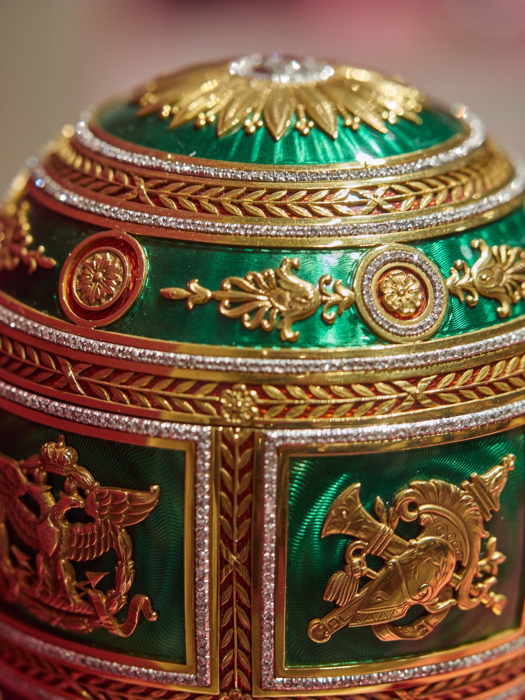
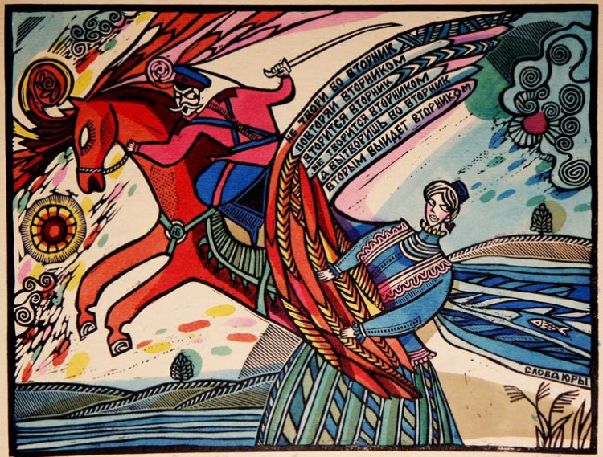
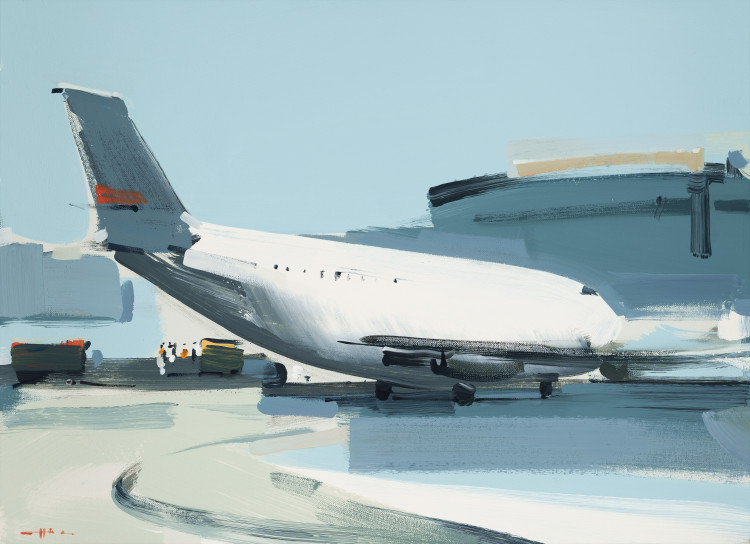
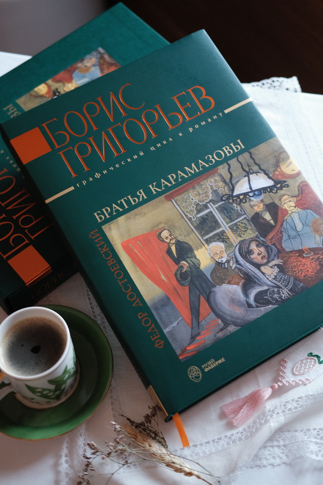
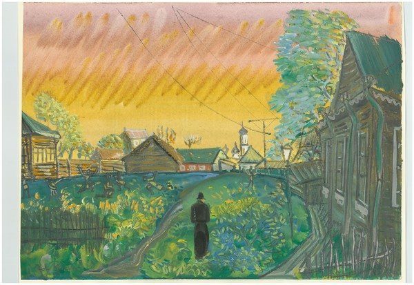
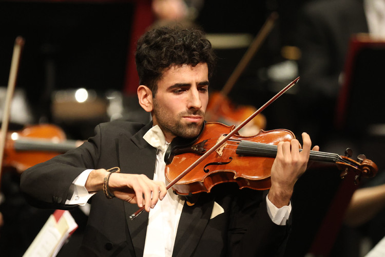

Императорские яйца
Пасхальные шедевры, которые стали символом мастерства фирмы Фаберже.

Шуваловский дворец · Санкт-Петербург
Девять императорских пасхальных яиц, более 4000 экспонатов, дворцовые интерьеры и ожившая история русского ювелирного искусства.
Коллекция
В центре коллекции — девять императорских пасхальных яиц, созданных для Александра III и Николая II. В собрании более 4000 предметов: ювелирные украшения, фантазийные изделия, столовое серебро и культовые предметы.

Пасхальные шедевры, которые стали символом мастерства фирмы Фаберже.

Ювелирные миниатюры соединяют искусство и историю Российской империи.

Гуашевая точность эмалей и редкие камни в микромасштабе.
События 2026
Только информация с официального сайта музея, актуальная на 7 апреля 2026 года.

Современное искусство Ростовской области.
16.01–15.03.2026 · 10:00–21:00 · 18+
Музей Фаберже, Санкт-Петербург
Подробнее
Современное искусство, инсталляции и новые медиумы.
02.04–16.04.2026 · 10:00–21:00 · 18+
Музей Фаберже, Санкт-Петербург
Подробнее
Графический цикл из 58 листов.
14–26.03.2026 · 10:00–20:45
В дни лекций 17, 19, 24 марта: 10:00–17:45 · 0+
Подробнее
Достоевский на все времена.
17–24.03.2026
Связан с выставкой Бориса Григорьева.
Подробнее
Венская классика и авангард.
21.01.2026 · 18:00 сбор гостей · 19:00 начало
Белоколонный зал · 0+
ПодробнееДанные актуальны по состоянию на 7 апреля 2026 года. Перед визитом проверьте обновления на официальном сайте.
План визита
Выберите формат: индивидуальное посещение, экскурсия, аудиогид или виртуальный тур.
Музей открыт ежедневно с 10:00 до 21:00.
Экспозиция доступна до 20:45. Касса — с 9:30 до 20:15.
Залы закрываются за 15 минут до завершения работы.
Музей работает без выходных.
В кассе продаются билеты только на текущий день — удобнее купить заранее онлайн.
Онлайн-аудиогид и расписание экскурсий доступны на официальном сайте музея.
Прогуляйтесь по залам Шуваловского дворца в формате 3D-тура.
Галерея
Подборка официальных снимков музея и открытых источников с атрибуцией.
Контакты
Администрация отвечает по телефону и email в будние дни с 10:00 до 19:00.
Санкт-Петербург, наб. реки Фонтанки, 21
+7 (812) 333-26-55
3332655@fsv.ru
Пн–Пт, 10:00–19:00
Атрибуция изображений